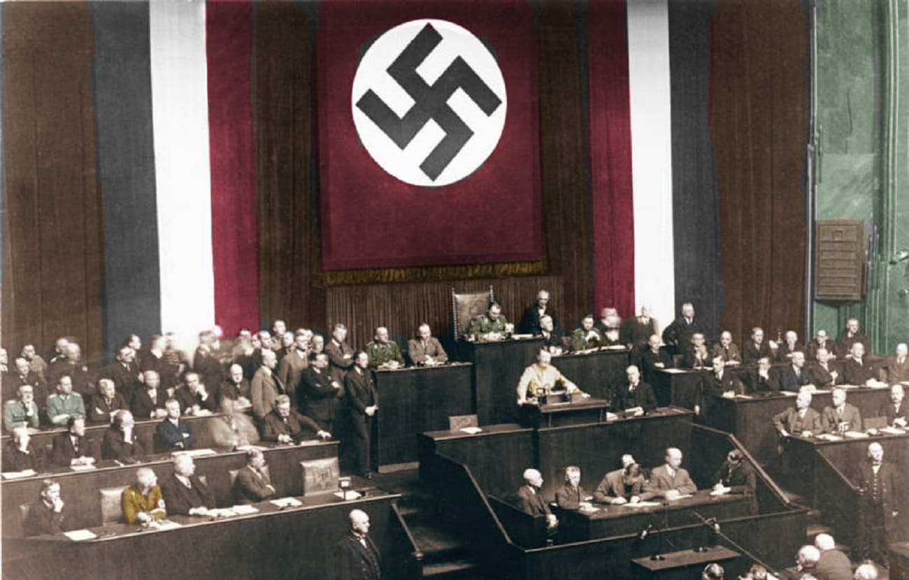

| "¿cuales fueron sus causas y consecuencias?" |
" Son muchas las causas que hay detrás de las guerras en el mundo en la actualidad. El control de los recursos naturales, la desigualdad, los conflictos por motivos étnicos, comerciales y tecnológicos, el auge de los extremismos y nacionalismos, o los efectos adversos del cambio climático. Las causas de la Segunda Guerra Mundial derivan de diferentes factores, tanto políticos, económicos y sociales como ideológicos que se arrastraron tras finalizar la Gran Guerra o Primera Guerra Mundial con el Tratado de Versalles, y a los que se sumó la Gran Depresión, entre otros.
|

| "¿cuando dio fin la Alemania nazi?" |
"9 de mayo de 1945
Tuvo lugar entre finales de abril y principios de mayo de 1945 y finalizaría, el 9 de mayo de 1945, tras la firma de la capitulación alemana, en Berlín, entre los mariscales Keitel y Zhúkov."
| "Ningún bastardo ganó jamás una guerra muriendo por su patria. La ganó haciendo que otro estúpido bastardo muera por la suya». George S. Patton. ATT: Adolf Hitler...
|
|
|
| | |